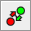
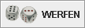

The toolbar originally is located right underneath the menu bar, but it floatable and can be dragged with the move by gripping the "knob" to the left of the bar. The bar can be shown as a window on its own or as a docked part of the main window, on the top, left, right or bottom (top is recommended).
To each button an action during a game is assigned. If an action is not available
at a time, the corresponding button will be disabled and cannot be pressed.
The buttons have got the following actions assigned:
| Button | Action |
|---|---|
| Starts a new game. The new game dialog pops up. If there is already a game running, a little dialog will show up to confirm that the current game will be aborted to start the new one. | |
| During a game the current board position can be saved by activating this button. The Save-File-Dialog will appear, so that a file which describes the state of the game, will be written to disk. At a later time you can continue the game at exactly the position that you have saved. | |
| Open the history window to analyse the game with. | |
| Turn the board by a 180°. | |
| "Flip" the board, i.e. swap "left" and "right". "Up" and "down" are kept the way they are. | |
|  | Exchange the colors of the players. Accordingly the messages will change too. |
| During a network game you can chat with your oponent if you press here. The Chat window will appear. | |
| During a game, if you think you will not win, you can propose to resign. You choose the value of your resign proposal in the upcoming dialog box and the other party may accept it or turn it down. | |
| If you have already moved one or more checkers and want to undo these moves, press this button. As soon as the oponent has thrown the dice, no undo is possible any longer. | |
| If you think your position is extraordinarily good, you may double the value of the game (see the rules). The other party may take or drop your offer. | |
|  It is your turn: Throw the dices. | |